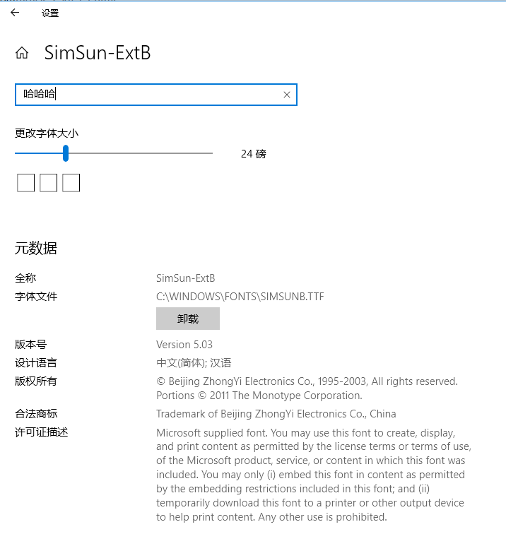

- Fonts
- Windows categories:
- Windows
这就是乱改字体的后果..
字体修复，不只是字体修复。
事由
偶然间看到一篇替换Win10字体来提升字体观感的文章，加上一直听说Win10的字体渲染很垃圾，于是就按照文中的步骤，把默认的微软雅黑字体替换成了苹果的苹方字体。
然而，使用了一段时间后发现，所有的字体似乎都小了一圈，而且在cmd中出现了字体大小错乱的情况。网上找了一圈发现Win10砍掉了调整字体大小的功能，现在只能以整体缩放来调整字体大小。新的字体感觉也没有想象中的那么好。
于是我把备份的默认字体又恢复了回去，按道理不会出事，然而我的电脑出锅了。一些软件的中文字体成了方框，cmd的字体也变得很奇怪。
解决方法
一番操作之后，发现设置里的新宋体是乱码，感觉可能是字体文件崩了。

但是simsunb.ttf这个文件我分明备份过。。
没办法，继续面向Google解决问题，这时候找到了一个微软社区页面，里面给出了三条命令：
DISM.exe /Online /Cleanup-image /Scanhealth
DISM.exe /Online /Cleanup-image /Restorehealth
sfc /scannow
根据微软官方支持页面的描述，这三个命令是检查系统文件的完整性并自动通过 Windows 更新来修复。
用管理员身份打开cmd，依次执行完重启，一切都恢复了原状。
后记
看了一些知乎回答，感觉Win10的字体也并没有那么糟糕。事实上我一直以来用着默认的字体也没有感到不舒服。~~可能是我眼瞎吧。~~
另外，上述的三个命令理论上能解决Windows的许多问题，碰到问题可以尝试。
2019/2/13 更新
目前家里入了 4K 显示器，200% 缩放，观感上没有任何问题。